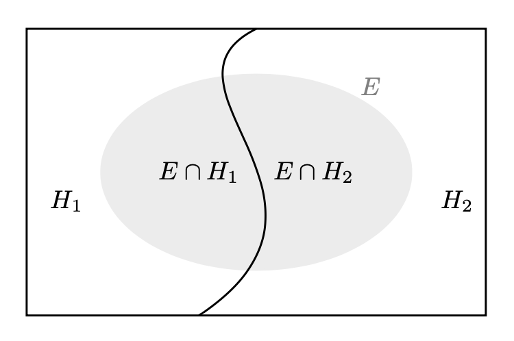

Il teorema di Bayes
Contents
19. Il teorema di Bayes#
Il teorema di Bayes assume un ruolo fondamentale nell’interpretazione soggettivista della probabilità perchè descrive l’aggiornamento della credenza che si aveva nel verificarsi dell’ipotesi \(H\) (quantificata con la probabilità assegnata all’ipotesi) in conseguenza del verificarsi dell’evidenza \(E\).
19.1. Definizione#
Teorema
Sia \((H_i)_{i\geq 1}\) una partizione dell’evento certo \(\Omega\) e sia \(E \subseteq \Omega\) un evento tale che \(P(E) > 0\), allora, per \(i = 1, \dots, \infty\):
L’eq. (19.1) contiene tre concetti fondamentali. I primi due distinguono il grado di fiducia precedente al verificarsi dell’evidenza \(E\) da quello successivo al verificarsi dell’evidenza \(E\). Pertanto, dati gli eventi \(H, E \subseteq \Omega,\) si definisce
probabilità a priori, \(P(H)\), la probabilità attribuita al verificarsi dell’ipotesi \(H\) prima di sapere che si è verificato l’evento \(E\);
probabilità a posteriori, \(P(H \mid E)\), la probabilità assegnata ad \(H\) una volta che sia noto \(E\), ovvero l’aggiornamento della probabilità a priori alla luce della nuova evidenza \(E\).
Il terzo concetto definisce la probabilità che ha l’evento \(E\) di verificarsi quando è vera l’ipotesi \(H\), ovvero la probabilità dell’evidenza in base all’ipotesi. Pertanto, dati gli eventi \(H, E \subseteq \Omega\) si definisce
verosimiglianza di \(H\) dato \(E\), \(P(E \mid H)\), la probabilità condizionata che si verifichi \(E\), se è vera \(H\).
Si noti che, per il calcolo della quantità a denominatore dell’eq. (19.1), si ricorre al teorema della probabilità assoluta.
Per fare un esempio, consideriamo il seguente problema. Posta una partizione dell’evento certo \(\Omega\) in due soli eventi che chiamiamo ipotesi \(H_1\) e \(H_2\), supponiamo conosciute le probabilità a priori \(P(H_1)\) e \(P(H_2)\). Consideriamo un terzo evento \(E \subseteq \Omega\) con probabilità non nulla di cui si conosce la verosimiglianza, ovvero si conoscono le probabilità condizionate \(P(E \mid H_1)\) e \(P(E \mid H_2)\). Supponendo che si sia verificato l’evento \(E\), vogliamo conoscere le probabilità a posteriori delle ipotesi, ovvero \(P(H_1 \mid E)\) e \(P(H_2 \mid E)\). La figura rappresenta una partizione dell’evento certo in due eventi chiamati ‘ipotesi’; l’evidenza \(E\) è un sottoinsieme dello spazio campione.
{kind=link}

Per trovare la probabilità dell’ipotesi 1, ad esempio, alla luce dell’evidenza osservata, scriviamo:
Sapendo che \(E = (E \cap H_1) \cup (E \cap H_2)\) e che \(H_1\) e \(H_2\) sono eventi disgiunti, ovvero \(H_1 \cap H_2 = \emptyset\), ne segue che possiamo calcolare \(P(E)\) utilizzando il teorema della probabilità totale:
Sostituendo tale risultato nella formula precedente otteniamo:
Un lettore attento si sarà reso conto che, in precedenza, abbiamo già applicato il teorema di Bayes quando abbiamo risolto il problema sulla mammografia e cancro al seno. In quel caso, le due ipotesi erano “la malattia è presente”, che possiamo denotare con \(M^+\), e “la malattia è assente”, \(M^-\). L’evidenza \(E\) era costituita dal risultato positivo al test (denotiamo questo evento con \(T^+\)). Con questa notazione, possiamo scrivere l’eq. (19.2) nel modo seguente:
Inserendo i dati del problema nella formula precedente otteniamo
19.1.1. Teorema di Bayes e valore predittivo di un test di laboratorio#
L’esercizio precedente illusta un uso importante del teorema di Bayes. Infatti, abbiamo visto sopra come il teorema di Bayes consente di calcolare la probabilità di malattia in caso di test positivo o la probabilità di assenza della malattia in caso di test negativo. Per ottenere questo risultato abbiamo bisogno delle seguenti informazioni: la prevalenza di una malattia, la sensibilità e la specificità di un test per la sua diagnosi. Esaminiamo più in dettaglio l’applicazione del teorema di Bayes in questo contesto.
Si definisce come sensibilità la probabilità che il test dia un risultato positivo dato che la malattia è presente: \(P(T^+ \mid M^+)\). Una sensibilità del 100% significa che il test è positivo nel 100% dei malati, una sensibilità del 90% significa che il test è positivo nel 90% dei malati, e così via.
Si definisce come specificità la probabilità che il test dia un risultato negativo dato che la malattia è assente: \(P(T^- \mid M^-)\). Una specificità del 100% significa che il test è negativo nel 100% dei sani, una specificità del 90% significa che il test è negativo nel 90% dei sani, e così via.
Si definisce come prevalenza della malattia la probabilità che la malattia sia presente, \(P^+\). Possiamo interpretare \(P^+\) come la proporzione di individui malati, in un dato istante, nella popolazione. Una prevalenza del 5 per mille significa che il 5 per mille delle persone è affetto dalla malattia, e così via.
\(T^+\) |
\(T^-\) |
|
|---|---|---|
\(M^+\) |
\(P(T^+ \cap M^+)\) (sensibilità) |
\(P(T^- \cap M^+)\) (1 - sensibilità) |
\(M^-\) |
\(P(T^+ \cap M^-)\) (1 - specificità ) |
\(P(T^- \cap M^-)\) (specificità) |
Abbiamo visto che il teorema di Bayes può essere scritto nel modo seguente:
Usando la tabella precedente, il valore predittivo del test positivo è dunque:
In maniera corrispondente, il valore predittivo del test negativo è dato da
Svolgiamo ora un esercizio in Python in cui calcoliamo il valore predittivo del test positivo e il valore predittivo del test negatico con i dati dell’esempio precedente.
def positive_predictive_value_of_diagnostic_test(sens, spec, prev):
return (sens * prev) / (sens * prev + (1 - sens) * (1 - prev))
def negative_predictive_value_of_diagnostic_test(sens, spec, prev):
return (spec * (1 - prev)) / (spec * (1 - prev) + (1 - sens) * prev)
sens = 0.9 # sensibilità
spec = 0.9 # specificità
prev = 0.01 # prevalenza
res_pos = positive_predictive_value_of_diagnostic_test(sens, spec, prev)
print(f"P(M+ | T+) = {round(res_pos, 3)}")
P(M+ | T+) = 0.083
res_neg = negative_predictive_value_of_diagnostic_test(sens, spec, prev)
print(f"P(M- | T-) = {round(res_neg, 3)}")
P(M- | T-) = 0.999
19.2. Aggiornamento bayesiano#
Il teorema di Bayes rende esplicito il motivo per cui la probabilità non possa essere pensata come uno stato oggettivo, quanto piuttosto come un’inferenza soggettiva e condizionata. Il denominatore del membro di destra dell’eq. (19.1) è un semplice fattore di normalizzazione. Nel numeratore compaiono invece due quantità: \(P(H_i\)) e \(P(E \mid H_i)\). La probabilità \(P(H_i)\) è la probabilità probabilità a priori (prior) dell’ipotesi \(H_i\) e rappresenta l’informazione che l’agente bayesiano possiede a proposito dell’ipotesi \(H_i\). Diremo che \(P(H_i)\) codifica il grado di fiducia che l’agente ripone in \(H_i\) precedentemente al verificarsi dell’evidenza \(E\). Nell’interpretazione bayesiana, \(P(H_i)\) rappresenta un giudizio personale dell’agente e non esistono criteri esterni che possano determinare se tale giudizio sia coretto o meno. La probabilità condizionata \(P(E \mid H_i)\) rappresenta invece la verosimiglianza di \(H_i\) dato \(E\) e descrive la plausibilità che si verifichi l’evento \(E\) se è vera l’ipotesi \(H_i\). Il teorema di Bayes descrive la regola che l’agente deve seguire per aggiornare il suo grado di fiducia nell’ipotesi \(H_i\) alla luce del verificarsi dell’evento \(E\). La \(P(H_i \mid E)\) è chiamata probabilità a posteriori dato che rappresenta la nuova probabilità che l’agente assegna all’ipotesi \(H_i\) affinché rimanga consistente con le nuove informazioni fornitegli da \(E\).
La probabilità a posteriori dipende sia dall’evidenza \(E\), sia dalla conoscenza a priori dell’agente \(P(H_i)\). È dunque chiaro come non abbia senso parlare di una probabilità oggettiva: per il teorema di Bayes la probabilità è definita condizionatamente alla probabilità a priori, la quale a sua volta, per definizione, è un’assegnazione soggettiva. Ne segue pertanto che ogni probabilità deve essere considerata come una rappresentazione del grado di fiducia soggettiva dell’agente.
Dato che ogni assegnazione probabilistica rappresenta uno stato di conoscenza e che ciascun particolare stato di conoscenza è arbitrario, un accordo tra agenti diversi non è richiesto. Ciò nonostante, la teoria delle probabilità ci fornisce uno strumento che, alla luce di nuove evidenze, consente di aggiornare in un modo razionale il grado di fiducia che attribuiamo ad un’ipotesi, via via che nuove evidenze vengono raccolte, in modo tale da formulare un’ipotesi a posteriori la quale non è mai definitiva, ma può sempre essere aggiornata in base alle nuove evidenze disponibili. Questo processo si chiama aggiornamento bayesiano.
19.3. Esercizio di ricapitolazione con Python#
Proseguendo con l’esempio del capitolo precedente, usiamo i dati penguins per applicare il teorema di Bayes.
import pandas as pd
df = pd.read_csv('data/penguins.csv')
df.dropna(inplace=True)
df.info()
<class 'pandas.core.frame.DataFrame'>
Int64Index: 333 entries, 0 to 343
Data columns (total 8 columns):
# Column Non-Null Count Dtype
--- ------ -------------- -----
0 species 333 non-null object
1 island 333 non-null object
2 bill_length_mm 333 non-null float64
3 bill_depth_mm 333 non-null float64
4 flipper_length_mm 333 non-null float64
5 body_mass_g 333 non-null float64
6 sex 333 non-null object
7 year 333 non-null int64
dtypes: float64(4), int64(1), object(3)
memory usage: 23.4+ KB
Riprendiamo le funzioni prob e conditional che abbiamo definito in precedenza.
def prob(A):
"""Computes the probability of a proposition, A."""
return A.mean()
def conditional(proposition, given):
return prob(proposition[given])
Per la congiunzione vale la proprietà di commutatività:
female = df["sex"] == "female"
small = df["body_mass_g"] < df["body_mass_g"].quantile(1/3)
prob(female & small) == prob(small & female)
True
Quindi possiamo scrivere:
conditional(female, given=small) * prob(small)
0.2552552552552553
oppure
conditional(small, given=female) * prob(female)
0.2552552552552552
Giungiamo così al teorema di Bayes:
conditional(female, given=small)
0.8252427184466019
conditional(small, given=female) * prob(female) / prob(small)
0.8252427184466018
oppure
conditional(small, given=female)
0.5151515151515151
conditional(female, given=small) * prob(small) / prob(female)
0.5151515151515152
19.4. Il problema delle due urne#
Supponiamo che vi siano due urne.
L’urna 1 (\(U_1\)) contiene 30 palline bianche (B) e 10 palline nere (N).
L’urna 2 (\(U_2\)) contiene 20 palline bianche e 20 palline nere.
Supponiamo di scegliere una delle urne a caso e, senza guardare, di scegliere una pallina a caso. Se la pallina è bianca, qual è la probabilità che provenga dall’urna 1?
Quello che vogliamo è la probabilità condizionata che abbiamo scelto dall’Urna 1 dato che abbiamo ottenuto una pallina bianca, \(P(U_1 \mid B)\).
Il problema ci fornisce le seguenti informazioni:
\(P(B \mid U_1)\) = 3/4,
\(P(B \mid U_2)\) = 1/2.
Il teorema di Bayes ci dice come le informazioni a disposizione si possono mettere in relazione con la domanda del problema:
Per calcolare la probabilità \(P(B)\) usiamo il teorema della probabilità totale:
ovvero
Concludiamo applicando il teorema di Bayes:
Il processo di aggiornamento bayesiano può essere anche svolto nel modo seguente. Riscrivo il teorema di Bayes nel modo seguente:
La probabilità \(P(H)\) è la probabilità delle ipotesi prima di avere osservato i dati. Nel nostro caso, le due ipotesi sono “Urna 1” e “Urna 2”, entrambe con la stessa probabilità, dato che non abbiamo ragioni a priori per dare più peso ad un’ipotesi rispetto all’altra. Costruiamo una tabella con un DataFrame in cui inseriamo la colonna prior:
table = pd.DataFrame(index=['Urn 1', 'Urn 2'])
table['prior'] = 1/2, 1/2
table
| prior | |
|---|---|
| Urn 1 | 0.5 |
| Urn 2 | 0.5 |
La probabilità \(P(D \mid H)\) è la probabilità dei dati, data l’ipotesi. È chiamata verosimiglianza. La probabilità di una pallina bianca dato che viene estratta dall’Urna 1 è 3/4. La probabilità di una pallina bianca dato che viene estratta dall’Urna 1 è 1/2. Aggiungo alla tabella la colonna likelihood.
table['likelihood'] = 3/4, 1/2
table
| prior | likelihood | |
|---|---|---|
| Urn 1 | 0.5 | 0.75 |
| Urn 2 | 0.5 | 0.50 |
La probabilità \(P(H \mid D)\) è la probabilità dell’ipotesi dopo avere osservato i dati. Si ottiene come il prodotto della verosimiglianza per la probabilità a priori, diviso per una costante di normalizzazione. Iniziamo a calcolare il la distribuzione a posteriori non normalizzata.
table['unnorm'] = table['prior'] * table['likelihood']
table
| prior | likelihood | unnorm | |
|---|---|---|---|
| Urn 1 | 0.5 | 0.75 | 0.375 |
| Urn 2 | 0.5 | 0.50 | 0.250 |
La probabilità dei dati, \(P(D)\), ovvero il numeratore bayesiano, è dato dalla somma di tutti i valori della distribuzione a posteriori non normalizzata:
prob_data = table['unnorm'].sum()
Possiamo ora normalizzare la distribuzione a posteriori:
table['posterior'] = table['unnorm'] / prob_data
table
| prior | likelihood | unnorm | posterior | |
|---|---|---|---|---|
| Urn 1 | 0.5 | 0.75 | 0.375 | 0.6 |
| Urn 2 | 0.5 | 0.50 | 0.250 | 0.4 |
19.5. Il problema dei dadi#
Il metodo precedente può anche essere usato quando ci sono più di due ipotesi. Downey [Dow21] discute il seguente problema. Supponiamo che nell’Urna 1 ci sia un dado a 6 facce, nell’Urna 2 un dado a 8 facce e nell’Urna 3 un dado a 12 facce. Un dado viene estratto a caso da un’urna e produce il risultato 1. Qual è la probabilità che ho usato un dado a 6 facce?
table2 = pd.DataFrame(index=[6, 8, 12])
table2
| 6 |
|---|
| 8 |
| 12 |
Per evitare arrotondamenti uso la funzione Fraction(). Inizio a definire la distribuzione a priori.
from fractions import Fraction
table2['prior'] = Fraction(1, 3)
table2
| prior | |
|---|---|
| 6 | 1/3 |
| 8 | 1/3 |
| 12 | 1/3 |
Definisco la verosimiglianza. Se il dado è a 6 facce, la probabilità di ottenere 1 è 1/6; se il dado ha 8 facce è 1/8; se il dado ha 12 facce è 1/12.
table2['likelihood'] = Fraction(1, 6), Fraction(1, 8), Fraction(1, 12)
table2
| prior | likelihood | |
|---|---|---|
| 6 | 1/3 | 1/6 |
| 8 | 1/3 | 1/8 |
| 12 | 1/3 | 1/12 |
Trovo la distribuzione a posteriori non normalizzata.
table2['unnorm'] = table2['prior'] * table2['likelihood']
table2
| prior | likelihood | unnorm | |
|---|---|---|---|
| 6 | 1/3 | 1/6 | 1/18 |
| 8 | 1/3 | 1/8 | 1/24 |
| 12 | 1/3 | 1/12 | 1/36 |
Normalizzo.
prob_data = table2['unnorm'].sum()
table2['posterior'] = table2['unnorm'] / prob_data
table2
| prior | likelihood | unnorm | posterior | |
|---|---|---|---|---|
| 6 | 1/3 | 1/6 | 1/18 | 4/9 |
| 8 | 1/3 | 1/8 | 1/24 | 1/3 |
| 12 | 1/3 | 1/12 | 1/36 | 2/9 |
La probabilità posteriore del dado a 6 facce è 4/9, che è più grande delle probabilità degli altri dadi, 3/9 e 2/9. Intuitivamente, il dado a 6 facce è il più probabile perché ha la probabilità più grande di produrre il risultato che abbiamo osservato.
19.6. Commenti e considerazioni finali#
La riflessione epistemologica contemporanea ha ampiamente messo in luce come la conoscenza non possa essere identificata con la certezza, ovvero con la garanzia razionale della verità. Da ciò deriva che qualunque giudizio deve necessariamente essere inteso come una decisione presa in condizioni d’incertezza. Stando così le cose, non si può più considerare la logica deduttiva, modellata sulle forme della dimostrazione matematica, come quella più adeguata al ragionamento scientifico. La ricerca scientifica ha invece bisogno di una logica dell’incertezza e questa viene fornita dalla teoria delle probabilità e, specialmente, da quello schema di inferenza noto come teorema di Bayes. È proprio in questi termini che può essere compresa quella rivoluzione metodologica contemporanea che, tra le altre cose, si è posta il problema di porre rimedio alla crisi della replicabilità dei risultati della ricerca [Ioa05] che sta affligendo molti ambiti della ricerca scientifica, inclusa la psicologia. Per un approfondimento a questo tema rimando nuovamente al libro Bernoulli’s fallacy di Clayton [Cla21].
In questo capitolo abbiamo descritto il teorema di Bayes facendo riferimento alle variabili casuali discrete. Il caso discreto, tuttavia, nonostante la sua apparente semplicità matematica, è il più contro-intuitivo. Risulta più intuitivo pensare al teorema di Bayes facendo riferimento alle variabili casuali continue. Questo sarà l’oggetto del capitolo Credibilità, modelli e parametri.